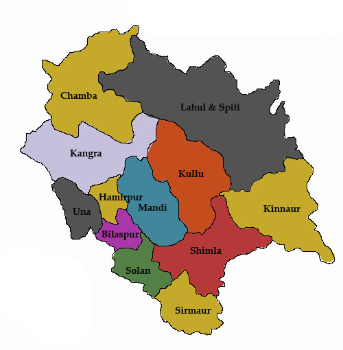

LET'S HAVE A LOOK AT THE TOUR MAP
WHERE TO VISIT , WHAT TO SEE?
SOME HOT PICKS(#HAVE_TO_VISIT)
- MANALI
- SHIMLA
- KULLU
- KUFRI
- ROHTANG PASS
- DHARAMSHALA
- MCLEODGANJ
- DALHOUSIE
- SPITI VALLEY
- KASOL
- TIRTHAN VALLEY
- KHAJJAR - MINI SWITZERLAND OF INDIA
- KINNAUR - LAND OF GOD
- KUFRI
- MANDI
- KANGRA - DEVBHUMI(LAND OF GODS)
- BILASPUR - GOBIND SAGAR LAKE
- SHOGHI
- TATTAPANI
- MANIKARAN SAHIB
- SOLAN
- ARKI - 18TH CENTURY FORT
- SOLANG VALLEY
- BEAS KUND TREK
- PIN VALLEY NATIONAL PARK
OTHER_ATTRACTIONS
- KASAULI
- BIR BILLING
- CHAMBA
- CHAIL
- KAZA
- PALAMPUR
- NAHAN
- BHUNTAR
- NARKANDA
- SANGLA
- MASHOBRA